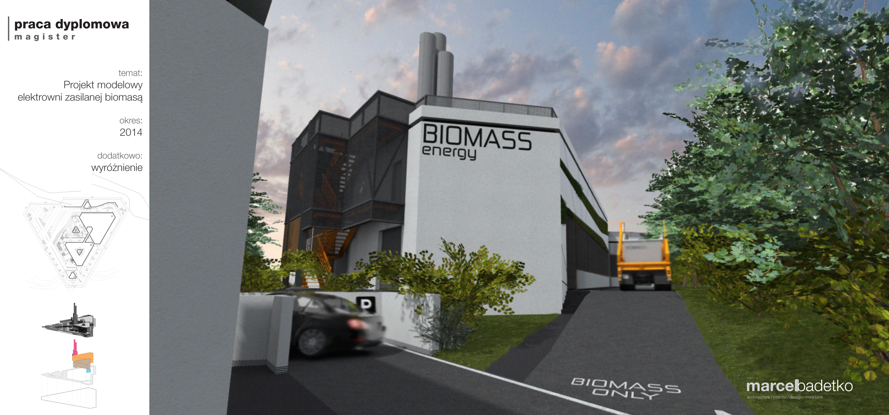

Wizja
Początek każdego projektu stanowi jego koncepcja, a jeszcze wcześniej wizja projektanta. Osobiście uważam, że projekt nie może być wyłącznie „widzi mi się” architekta, ponieważ to nie on będzie dane miejsce zamieszkiwał, lub użytkował. Projektowanie wnętrza z sensem zaczyna się od klienta, to on musi nakierować w jakim środowisku czuje się najlepiej – ale gdyby wiedział to w pełni, to po co mu architekt?

Mam wyobrażenie swojego wymarzonego domu, wymarzonego mieszkania, a nawet wymarzonego miasta. Wszystko piękne jak na pocztówce i ze stale grającą muzyką w tle. Nie ma ideałów, są granice, które można, a nawet trzeba przekraczać. Moje inspiracje czerpię z wielu realizacji kolegów po fachu. Internet daje obecnie możliwość zobaczenia próbki designu praktycznie z każdego miejsca. Nie daje to pełnego obrazu, to tylko wrażenie wzrokowe, ale o tym w innym artykule. Otaczająca nasz rzeczywistość to nie jedyne miejsce z którego czerpię inspirację, ponieważ istnieje też ta wirtualna, pełna najśmielszych, niewyobrażalnych z punktu chociażby politycznego, jak i konstrukcyjnego, czy wykonawczego, ale dająca wiele nowatorskich pomysłów. Przy każdym projekcie lubię gdy inwestor opowiada mi filozofię swojego mieszkania, co lubi robić, jak spędza wieczór w salonie (oczywiście nie brnąc za daleko w intymność) podstawowe informacje, pomagające mi wykreować dla niego przestrzeń.
Przykładem niech będzie coś skrajnego, zupełna abstrakcja – czyli moje własne wymarzone mieszkanie.
Kiedy wchodzę do mieszkania mieszkając w mieście, z całego otaczającego zgiełku na początek pragnę ciszy. Długi hol z zabudowanymi szafami, oświetlony ledowymi pierścieniami biegnącymi przez ściany, sufit i podłogę. Jest tam miejsce, gdzie wiszą moje rowery, deski i inne sportowe wymysły których używam może raz w roku kiedy jest na to czas. W strefie wejściowej jest surowo, beton, połączony z matową bielą, jest to strefa brudna, w której bez problemu mogę się poruszać w butach, nawet ubłoconych. Kuchnia, na pewno duża i z wyspą, wręcz stworzona do programów kulinarnych, mimo, że nie jestem wybitnym kucharzem, to każdego dnia z przyjemnością wyciągałbym tajną nie publikowaną książkę kucharską mamy i starał się ugotować coś co wypełni mieszkaniem wspaniałym lekkim zapachem wykwintnych kulinariów. Jest tam dużo światła, najpierw główne, eksponujące kuchnię, potem funkcjonalne dzięki któremu nie utnę sobie palca krojąc marchewkę, a na koniec dekoracyjne w postaci podświetleń, które po zgaszeniu poprzednich pięknie podkreśla, że w tej wielkiej wnęce coś stoi. Wchodząc do salonu za każdym razem chciałbym słyszeć grającą w tle muzykę ambient, a całe wnętrze naprowadzałoby mnie na wielkie przeszklone okno z widokiem na rozświetlone miasto. Wielka kanapa umieszczona dosłownie dwa stopnie niżej wydziela miejsce w którym mogę leżeć w spokoju oglądając koło fortuny lub wczytując się w cokolwiek innego niż 50 twarzy greya. Ale w okolicy musi się te pojawić biurko gdzie mogę popracować oraz stół, przy którym zjem ten wykwintny obiad, który przecież ugotowałem. Oświetlenie tego miejsca ma szczególne znaczenie. Wieczorami chcę półmroku, ciepłego światła doskonale parującego się z dużą ilością drewna, szare popołudnia to białe energiczne światło pobudzające do pracy, na czas imprezy wszystkiego po trochu + może jeszcze trochę koloru. Wysokie sufity pozwalają na mnóstwo wiszących efektownych lamp, na ścianach wiszą ulubione plakaty, a od światła dziennego zawsze mogą mnie uchronić ciężkie zasłony lub wewnętrzne żaluzje. Przed snem warto się wziąć prysznic i tu jest sedno sprawy, kiedy wychodzę z mieszkania potrzebuję jasnego, żywego światła przy którym uczeszę niesforne włosy, ogolę nos i uśmiechnę się do siebie samego ze dwa razy na dobry początek dnia. Jednak wieczorem, to już co innego, tutaj wolę półmork, chcę wziąć relaksujący prysznic, nie zależy mi w tym momencie na funkcjonalności, ale poczuciu, znajduję się w innym miejscu. Podłoga prysznica to obłe kamienie, które wręcz stopy masują, gdzieś w pobliżu zielona ściana bliskość natury, uspokajający, dający poczucie bezpieczeństwa zielony kolor, deszczownica i cicho grająca muzyka ambient – tak muzyka ambient to chyba podstawowy punkt w moim przyszłym mieszkaniu. Zrelaksowany mogę iść już tylko w jedno miejsce, do sypialni i tutaj…jak każdy pewnie się domyśla, gra muzyka ambient, ale poza tym dominują ciemne przytulne kolory. Dużo drewna, ciepłe światło, duże łóżko, miękka, lekko łaskocząca wykładzina na podłodze. To miejsce jest zdecydowanie off limits dla obcych przybyszy, to moja prywatna przestrzeń gdzie się wyśpię i zresetuję na kolejny dzień.
Moja wizja jest o tyle abstrakcyjna, że zadowoliłby mnie jedynie loft na najwyższym piętrze budynku pofabrycznego w centrum jakiegoś dużego i pięknego miasta lub adekwatnie apartament w jakimś wyjątkowo luksusowym wieżowcu. Ale od czego są marzenia! Rzecz w tym, żeby miejsce w którym planujemy mieszkać zostało zrobione w sposób Nam odpowiadający, tworząc własną przestrzeń nie możemy się oglądać na to co uznamy akceptowalne przez innych, tylko to co kreuje naszą osobowość, coś co da wyraz naszym upodobaniom i da wyraz naszej wyjątkowości. Skoro przez całe życie się nie gotowało, to raczej się nie zacznie, a przynajmniej nie na skalę w której potrzebna jest kuchnia za parędziesiąt tysięcy, ale za to jeśli wymarzonym spędzeniem wieczoru jest czytanie książek, to w salonie powinna stać najwygodniejsza kanapa świata.
Mam nadzieję, że będzie mi dane tworzyć coraz więcej projektów „szytych na miarę”, które będą coraz bardziej odważne i które pomogą w decyzji otwarcia się i pokazania swojej osobowości poprzez swoje małe miejsce na ziemi.
Fascynuje mnie jak odmienni jesteśmy i uważam, że to bardzo dobrze. Podróżując przez rok po świecie, czy spędzając większość czasu w jednym mieście, lubiąc starocie lub robiąc remont co dwa miesiące, przeprowadzając się stale z jednego miejsca w drugie goniąc za pracą, nie mogąc żyć bez sklepiku osiedlowego ulicę dalej, czy żyjąc na stepie, wszyscy w pewnym momencie potrzebujemy tego jednego miejsca, w którym będziemy czuli się najlepiej, naszego domu.